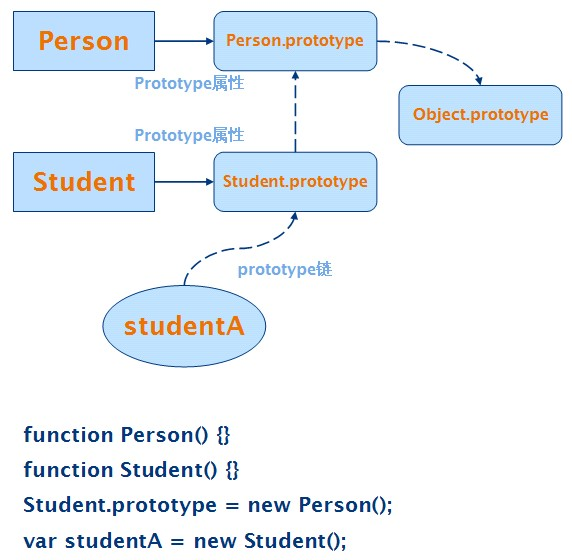
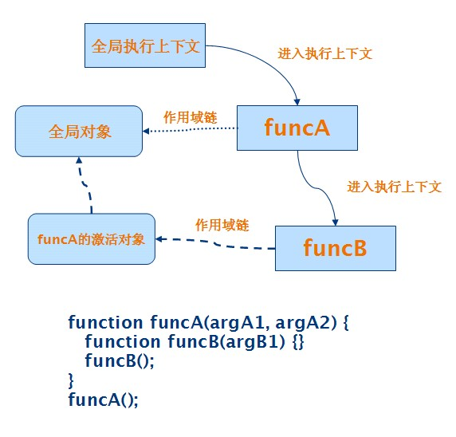

js高级特性
JavaScript 中一共有 5 种基本类型，分别是 String、Number、Boolean、Null 和 Undefined 。前 3 种都比较好理解，后面两种就稍微复杂一点。 Null 类型只有一个值，就是 null ； Undefined 类型也只有一个值，即 undefined 。 null 和 undefined 都可以作为字面量（literal）在 JavaScript 代码中直接使用。
null 与对象引用有关系，表示为空或不存在的对象引用。当声明一个变量却没有给它赋值的时候，它的值就是 undefined 。
undefined 的值会出现在如下情况：
- 从一个对象中获取某个属性，如果该对象及其 prototype 链 中的对象都没有该属性的时候，该属性的值为 undefined 。
- 一个 function 如果没有显式的通过 return 来返回值给其调用者的话，其返回值就是 undefined 。有一个特例就是在使用new 的时候。
- JavaScript 中的 function 可以声明任意个形式参数，当该 function 实际被调用的时候，传入的参数的个数如果小于声明的形式参数，那么多余的形式参数的值为 undefined 。
关于 null 和 undefined 有一些有趣的特性：
- 如果对值为 null 的变量使用 typeof 操作符的话，得到的结果是 object ；而对 undefined 的值使用 typeof，得到的结果是 undefined 。如
typeof null === "object";typeof undefined === "undefined" -
null == undefined，但是null !== undefined
对于 if 表达式，大家都不陌生。 JavaScript 中 if 后面紧跟的表达式的真假值判断与其它语言有所不同。具体请看表 1 。
| 类型 | 真假值 |
|---|---|
| Null | 总是为假（false） |
| Undefined | 总是为假（false） |
| Boolean | 保持真假值不变 |
| Number | +0，-0 或是 NaN 的时候为假，其它值为真 |
| String | 空字符串的时候为假，其它值为真 |
| Object | 总是为真（true） |
从表 1 中可以看到，在 JavaScript 中使得 if 判断为假的值可能有 null、undefined、false、+0、-0、NaN 和空字符串（""）。
JavaScript 中有两个判断值是否相等的操作符，== 与 === 。两者相比，== 会做一定的类型转换；而 === 不做类型转换，所接受的相等条件更加严格。
在使用 === 来判断两个值是否相等的时候，如判断x===y
，会首先比较两个值的类型是否相等，如果不相等的话，直接返回 false 。接着根据 x 的类型有不同的判断逻辑。
- 如果 x 的类型是 Undefined 或 Null，则返回 true 。
- 如果 x 的类型是 Number，只要 x 或 y 中有一个值为 NaN，就返回 false ；如果 x 和 y 的数字值相等，就返回 true ；如果 x 或 y 中有一个是 +0，另外一个是 -0，则返回 true 。
- 如果 x 的类型是 String，当 x 和 y 的字符序列完全相同时返回 true，否则返回 false 。
- 如果 x 的类型是 Boolean，当 x 和 y 同为 true 或 false 时返回 true，否则返回 false 。
- 当 x 和 y 引用相同的对象时返回 true，否则返回 false 。
在使用 == 来判断两个值是否相等的时候，如判断x==y
，当 x 和 y 的类型一样的时候，判断逻辑与 === 一样；如果 x 和 y 的类型不一样，== 不是简单的返回 false，而是会做一定的类型转换。
- 如果 x 和 y 中有一个是 null，另外一个是 undefined 的话，返回 true 。如
null == undefined。 - 如果 x 和 y 中一个的类型是 String，另外一个的类型是 Number 的话，会将 String 类型的值转换成 Number 来比较。如
3 == "3"。 - 如果 x 和 y 中一个的类型是 Boolean 的话，会将 Boolean 类型的值转换成 Number 来比较。如
true == 1、true == "1" - 如果 x 和 y 中一个的类型是 String 或 Number，另外一个的类型是 Object 的话，会将 Object 类型的值转换成基本类型来比较。如
[3,4] == "3,4"
需要注意的是 == 操作符不一定是传递的，即从A == B, B == C
并不能一定得出A == C
。考虑下面的例子，var str1 = new String("Hello"); var str2 = new String("Hello"); str1 == "Hello"; str2 == "Hello"
，但是str1 != str2
。
JavaScript 中的数组（Array）和通常的编程语言，如 Java 或是 C/C++ 中的有很大不同。在 JavaScript 中的对象就是一个无序的关联数组，而 Array 正是利用 JavaScript 中对象的这种特性来实现的。在 JavaScript 中，Array 其实就是一个对象，只不过它的属性名是整数，另外有许多额外的属性（如 length）和方法（如 splice）等方便地操作数组。
创建一个 Array 对象有两种方式，一种是以数组字面量的方式，另外一种是使用 Array 构造器。数组字面量的方式通常为大家所熟知。如var array1 = [2, 3, 4];
。使用 Array 构造器有两种方式，一种是var array2 = new Array(1, 2, 3);
；另外一种是var array3 = Array(1, 2, 3);
。这两种使用方式的是等价的。使用 Array 构造器的时候，除了以初始元素作为参数之后，也可以使用数组大小作为参数。如var array4 = new Array(3);
用来创建一个初始大小为 3 的数组，其中每个元素都是 undefined 。
JavaScript 中的 Array 提供了很多方法。
-
push和pop在数组的末尾进行操作，使得数组可以作为一个栈来使用。 -
shift和unshift在数组的首部进行操作。 -
slice(start, end)用来取得原始数组的子数组。其中参数start和end都可以是负数。如果是负数的话，实际使用的值是参数的原始值加上数组的长度。如var array = [2, 3, 4, 5];array.slice(-2, -1);等价于array.slice(2, 3)。 -
splice是最复杂的一个方法，它可以同时删除和添加元素。该方法的第一个参数表示要删除的元素的起始位置，第二个参数表示要删除的元素个数，其余的参数表示要添加的元素。如代码var array = [2, 3, 4, 5]; array.splice(1, 2, 6, 7, 8);执行之后，array中的元素为[2, 6, 7, 8, 5]。该方法的返回被删除的元素。
JavaScript 中数组的 length 属性与其他语言中有很大的不同。在 Java 或是 C/C++ 语言中，数组的 length 属性都是用来表示数组中的元素个数。而 JavaScript 中，length 属性的值只是 Array 对象中最大的整数类型的属性的值加上 1 。当通过 [] 操作符来给 Array 对象增加元素的时候，如果 [] 中表达式的值可以转换为正整数，并且其值大于或等于 Array 对象当前的 length 的值的话，length 的值被设置成该值加上 1 。 length 属性也可以显式的设置。如果要设置的值比原来的 length 值小的话，该 Array 对象中所有大于或等于新值的整数键值的属性都会被删除。如代码清单 1 中所示。
var array = []; |
在 JavaScript 中，在一个 function 内部可以使用 arguments 对象。该对象中包含了 function 被调用时的实际参数的值。 arguments 对象虽然在功能上有些类似数组（Array ）， 但是它不是数组。 arguments 对象与数组的类似体现在它有一个 length 属性，同时实际参数的值可以通过 [] 操作符来获取。但是 arguments 对象并没有数组可以使用的 push、pop、splice 等 function 。其原因是 arguments 对象的 prototype 指向的是 Object.prototype 而不是 Array.prototype 。
Java 和 C++ 语言都支持方法重载（overloading），即允许出现名称相同但是形式参数不同的方法；而 JavaScript 并不支持这种方式的重载。因为 JavaScript 中的 function 对象也是以属性的形式出现的，在一个对象中增加与已有 function 同名的新 function 时，旧的 function 对象会被覆盖。不过可以通过使用 arguments 来模拟重载，其实现机制是通过判断 arguments 中实际参数的个数和类型来执行不同的逻辑。如代码清单 2 中所示。
function sayHello() {
|
callee 是 arguments 对象的一个属性，其值是当前正在执行的 function 对象。它的作用是使得匿名 function 可以被递归调用。下面以一段计算斐波那契序列（Fibonacci sequence）中第 N 个数的值的代码来演示 arguments.callee 的使用，见代码清单 3 。
function fibonacci(num) {
|
JavaScript 中的每个对象都有一个 prototype 属性，指向另外一个对象。使用对象字面量创建的对象的 prototype 指向的是Object.prototype
，如var obj = {"name" : "Alex"};
中创建的对象obj
的 prototype 指向的就是Object.prototype
。而使用 new 操作符创建的对象的 prototype 指向的是其构造器的 prototype 。如var users = new Array();
中创建的对象users
的 prototype 指向的是Array.prototype
。由于一个对象 A 的 prototype 指向的是另外一个对象 B，而对象 B 自己的 prototype 又指向另外一个对象 C，这样就形成了一个链条，称为 prototype 链。这个链条会不断继续，一直到Object.prototype
。Object.prototype
对象的 prototype 值为 null，从而使得该链条终止。图 1
中给出了 prototype 链的示意图。
图 1. JavaScript prototype 链示意图

在图 1
中，studentA
是通过 new 操作符创建的，因此它的 prototype 指向其构造器Student
的 prototype ；Student.prototype
的值是通过 new 操作符创建的，其 prototype 指向构造器Person
的 prototype 。studentA
的 prototype 链在图 1
中用虚线表示。
prototype 链在属性查找过程中会起作用。当在一个对象中查找某个特定名称的属性时，会首先检查该对象本身。如果找到的话，就返回该属性的值；如果找不到的话，会检查 该对象的 prototype 指向的对象。如此下去直到找到该属性，或是当前对象的 prototype 为 null 。 prototype 链在设置属性的值时并不起作用。当设置一个对象中某个属性的值的时候，如果当前对象中存在这个属性，则更新其值；否则就在当前对象中创建该属性。
JavaScript 中并没有 Java 或 C++ 中类（class）的概念，而是通过 prototype 链来实现基于 prototype 的继承。在 Java 中，状态包含在对象实例中，方法包含在类中，继承只发生在结构和行为上。而在 JavaScript 中，状态和方法都包含在对象中，结构、行为和状态都是被继承的。这里需要注意的是 JavaScript 中的状态也是被继承的，也就是说，在构造器的 prototype 中的属性是被所有的实例共享的。如代码清单 4 中所示。
function Student(name) {
|
代码清单 4
中的问题在于将selectedCourses
作为 prototype 的属性之后，studentA
和studentB
两个实例共享了该属性，它们操作的实际是同样的数据。
JavaScript 中的 this 一直是容易让人误用的，尤其对于熟悉 Java 的程序员来说，因为 JavaScript 中的
this 与 Java 中的 this 有很大不同。在一个 function 的执行过程中，如果变量的前面加上了 this 作为前缀的话，如this.myVal
，对此变量的求值就从 this 所表示的对象开始。
this 的值取决于 function 被调用的方式，一共有四种，具体如下：
- 如果一个 function 是一个对象的属性，该 funtion 被调用的时候，this 的值是这个对象。如果 function 调用的表达式包含句点（.）或是 []，this 的值是句点（.）或是 [] 之前的对象。如
myObj.func和myObj["func"]中，func被调用时的 this 是myObj。 - 如果一个 function 不是作为一个对象的属性，那么该 function 被调用的时候，this 的值是全局对象。当一个
function 中包含内部 function 的时候，如果不理解 this 的正确含义，很容易造成错误。这是由于内部 function 的
this 值与它外部的 function 的 this 值是不一样的。代码清单 5
中，在
myObj的func中有个内部名为inner的 function，在inner被调用的时候，this 的值是全局对象，因此找不到名为myVal的变量。这个时候通常的解决办法是将外部 function 的 this 值保存在一个变量中（此处为self），在内部 function 中使用它来查找变量。 - 如果在一个 function 之前使用 new 的话，会创建一个新的对象，该 funtion 也会被调用，而 this 的值是新创建的那个对象。如
function User(name) {this.name = name}; var user1 = new User("Alex");中，通过调用new User("Alex")，会创建一个新的对象，以user1来引用，User这个 function 也会被调用，会在user1这个对象中设置名为name的属性，其值是Alex。 - 可以通过 function 的 apply 和 call 方法来指定它被调用的时候的 this 的值。 apply 和
call 的第一个参数都是要指定的 this 的值，两者不同的是调用的实际参数在 apply 中是以数组的形式作为第二个参数传入的，而 call
中除了第一个参数之外的其它参数都是调用的实际参数。如
func.apply(anotherObj, [arg1, arg2])中，func调用时候的 this 指的是anotherObj，两个参数分别是arg1和arg2。同样的功能用 call 来写则是func.call(anotherObj, arg1, arg2)。
var myObj = {
|
JavaScript 中并没有 Java 或是 C++ 中的类（class）的概念，而是采用构造器（constructor）的方式来创建对象。在 new 表达式中使用构造器就可以创建新的对象。由构造器创建出来的对象有一个隐含的引用指向该构造器的 prototype 。
所有的构造器都是对象，但并不是所有的对象都能成为构造器。能作为构造器的对象必须实现隐含的[[Construct]
方法。如果 new 操作符后面的对象并不是构造器的话，会抛出 TypeError 异常。
new 操作符会影响 function 调用中 return 语句的行为。当 function 调用的时候有 new 作为前缀，如果 return 的结果不是一个对象，那么新创建的对象将会被返回。在代码清单 6
中，functionanotherUser
中通过 return 语句返回了一个对象，因此u2
引用的是返回的那个对象；而 functionuser
并没有使用 return 语句，因此u1
引用的是新创建的user
对象。
function user(name) {
|
JavaScript 中的 eval 可以用来解释执行一段 JavaScript 程序。当传给 eval 的参数的值是字符串的时候，该字符串会被当成一段 JavaScript 程序来执行。
除了显式的调用 eval 之外，JavaScript 中的有些 function 能接受字符形式的 JavaScript 代码并执行，这相当于隐式的调用了 eval 。这些 function 的典型代表是setTimeout
和setInterval
。具体请见代码清单 7
。由于 eval 的性能比较差，所以在使用setTimeout
和setInterval
等 function 的时候，最好传入 function 的引用，而不是字符串。
var obj = {
|
在目前的 Ajax 应用中，JSON 是一种流行的浏览器端和服务器端处之间传输数据的格式。服务器端传过来的数据在浏览器端通过 JavaScript 的 eval 方法转换成可以直接使用的对象。然而，在浏览器端执行任意的 JavaScript 会带来潜在的安全风险，恶意的 JavaScript 代码可能会破坏应用。对于这个问题，有两种解决方式：
- 带注释的 JSON（JSON comments filtering）和带前缀的 JSON（JSON prefixing）
- 这两种方法都是 Dojo 中用来避免 JSON 劫持（JSON hijacking）的。带注释的 JSON
指的是从服务器端返回的 JSON 数据都是带有注释的，浏览器端的 JavaScript 代码需要先去掉注释的标记，再通过 eval 来获得
JSON 数据。这种方法一度被广泛使用，后来被证明并不安全，还会引入其它的安全漏洞。带前缀的 JSON
是目前推荐使用的方法，这种方法的使用非常简单，只需要在从服务器端的 JSON 字符串之前加上
{} &&，再调用 eval 。关于这两种方法的细节，请看参考资料 。 - 对 JSON 字符串进行语法检查
- 安全的 JSON 应该是不包含赋值和方法调用的。在 JSON 的 RFC 4627 中，给出了判断 JSON 字符串是否安全的方法，是通过两个正则表达式来实现的。具体见代码清单 8 。关于 RFC 4627 的细节，请看参考资料 。
清单 8. RFC 4627 中给出的检查 JSON 字符串的方法
var my_JSON_object = !(/[^,:{}/[/]0-9./-+Eaeflnr-u /n/r/t]/.test(
|
执行上下文（execution context）和作用域链（scope chain）
执行上下文（execution context）是 ECMAScript 规范（请看参考资料 ） 中用来描述 JavaScript 代码执行的抽象概念。所有的 JavaScript 代码都是在某个执行上下文中运行的。在当前执行上下文中调用 function 的时候，会进入一个新的执行上下文。当该 function 调用结束的时候，会返回到原来的执行上下文中。如果 function 调用过程中抛出异常，并没有被捕获的话，有可能从多个执行上下文中退出。在 function 调用过程，也可能调用其它的 function，从而进入新的执行上下文。由此形成一个执行上下文栈。
每个执行上下文都与一个作用域链（scope chain）关联起来。该作用域链用来在 function 执行时求标识符（Identifier）的值。在该链中包含多个对象。在对标识符进行求值的过程中，会从链首的对象开始，然后依次查找后面的对象，直到在 某个对象中找到与标识符名称相同的属性。如”protype 链与继承“ 中所述，在每个对象中进行属性查找的时候，会使用该对象的 prototype 链。在一个执行上下文中，与其关联的作用域链只会被with 语句和 catch 子句影响。
在进入一个新的执行上下文的时候，会按顺序执行下面的操作：
- 创建激活（Activation）对象
激活对象是在进入新的执行上下文的时候被创建出来的，并与新的执行上下文关联起来。在初始化的时候，该对象包含一个名为arguments 的属性。激活对象在变量初始化的时候也会被使用。 JavaScript 代码不能直接访问该对象，但是可以访问该对象里面的成员（如 arguments）。 - 创建作用域链
接下来的操作是创建作用域链。每个 function 都有一个内部属性[[scope]]，它的值是一个包含多个对象的链。该属性的具体值与 function 的创建方式和在代码中的位置有很大关系（见“function 对象的创建方式 ”）。这个步骤中的主要操作是将上一步中创建的激活对象添加到 function 的[[scope]]属性对应的链的前面。 - 变量初始化
该步骤对 function 中需要使用的变量进行初始化。初始化时使用的对象是第一步中所创建的激活对象，不过被称之为变量（Variable）对象。会被初始化的变量包括 function 调用时的实际参数、内部 function 和局部变量。在这个步骤中，对于局部变量，只是在变量对象中创建了同名的属性，但是属性的值为 undefined，只有在 function 执行过程中才会被真正赋值。
全局 JavaScript 代码是在全局执行上下文中运行的，该上下文的作用域链只包含一个全局对象。
图 2 中给出了 function 执行过程中的作用域链的示意图，其中的虚线表示作用域链。
图 2. 作用域链示意图

function a() {}、var a = function() {} 与 var a = new Function()
在 JavaScript 中，function 对象的创建方式有三种：function 声明、function 表达式和使用 Function 构造器。通过这三种方法创建出来的 function 对象的[[scope]]
属性的值会有所不同，从而影响 function 执行过程中的作用域链。下面具体讨论这三种情况。
- function 声明
- function 声明的格式是
function funcName() {}。使用 function 声明的 function 对象是在进入执行上下文时的变量初始化过程中创建的。该对象的[[scope]]属性的值是它被创建时的执行上下文对应的作用域链。 - function 表达式
- function 表达式的格式是
var funcName = function() {}。使用 function 表达式的 function 对象是在该表达式被执行的时候创建的。该对象的[[scope]]属性的值与使用 function 声明创建的对象一样。 - Function 构造器
- 对于 Function 构造器，大家可能比较陌生。声明一个 function 时，通常使用前两种方式。该方式的格式是
var funcName = new Function(p1, p2,..., pn, body)，其中 p1、p2 到 pn 表示的是该 function 的形式参数，body 是 function 的内容。使用该方式的 function 对象是在构造器被调用的时候创建的。该对象的[[scope]]属性的值总是一个只包含全局对象的作用域链。
function 对象的 length 属性可以用来获取声明 function 时候指定的形式参数的个数。如前所述，function 对象被调用时的实际参数是通过 arguments 来获取的。
with 语句的语法是with ( Expression ) Statement
。 with 会把由 Expression 计算出来的对象添加到当前执行上下文的作用域链的前面，然后使用这个扩大的作用域链来执行语句 Statement，最后恢复作用域链。不管里面的语句是否正常退出，作用域链都会被恢复。
由于 with 语言会把额外的对象添加到作用域链的前面，使用 with 可能会影响性能并造成难以发现的错误。由于额外的对象在作用域链的前面，当执行到 with 里面的语句，需要对一个标识符求值的时候，会首先沿着该对象的 prototype 链查找。如果找不到，才会依次查找作用域链中原来的对象。因此，如果在 with 里面的语句中频繁引用不在额外对象的 prototype 链中的变量的话，查找的速度会比不使用 with 慢。具体见代码清单 9 。
function A() {
|
在代码中，首先通过 prototype 的方式实现了继承。在 with 中，执行alert(typeof a)
需要查找变量 a，由于 obj 在作用域链的前面，而 obj 中也存在名为 a 的属性，因此 obj 中的 a 被找到。执行alert(myVar)
需要查找变量 myVal，而 obj 中不存在名为 myVal 的属性，会继续查找作用域链中后面的对象，因此比不使用 with 的速度慢。需要注意的是最后一条语句alert(typeof a)
，它不在 with 里面，因此查找到的 a 是之前声明的 number 型的变量。
闭包（closure）是 JavaScript 中一个非常强大的功能。如果使用得当的话，可以使得代码更简洁，并实现在其它语言中很难实现的功能；而如果使用不当的话，则会导致难以调试的错误，也可能 造成内存泄露。只有在充分理解闭包的基础上，才能正确的使用它。理解闭包需要首先理解 JavaScript 中的prototype 链 、执行上下文和作用域链 等概念。
闭包指的是一个表达式（通常是一个 function），该表达式可以有自由的变量，并且运行环境能够正确的获取这些变量的值。 JavaScript 中闭包的产生是由于 JavaScript 中允许内部 function，也就是在一个 function 内部声明的 function 。内部 function 可以访问外部 function 中的局部变量、传入的参数和其它内部 function 。当内部 function 可以在包含它的外部 function 之外被引用时，就形成了一个闭包。这个时候，即便外部 function 已经执行完成，该内部 function 仍然可以被执行，并且其中所用到的外部 function 的局部变量、传入的参数等仍然保留外部 function 执行结束时的值。
下面通过一个例子来说明闭包的形成，见代码清单 10 。
function addBy(first) {
|
在代码清单 10
中，外部 functionaddBy
的内部 functionadd
的引用被返回给addBy
的调用者，同时add
在方法体中使用了addBy
的参数first
。这样就形成了一个闭包。通过调用addBy(10)
得到的 functionfunc
，在其之后的执行过程中，都会保留创建的时候使用的first
参数的值10
。
下面分析代码清单 10
中执行的细节。首先addBy(10)
被调用。由于addBy
是在全局代码中声明的，因此被调用时候的执行上下文对应的作用域链只包含全局对象。在addBy
的方法体中，声明了一个内部 functionadd
。add
的[[scope]]
属性会在作用域链之前加上 functionaddBy
的激活对象。该对象中包含了经过初始化的参数first
，其值为10
。至此，functionfunc
的[[scope]]
属性的值是包含两个对象。当func
被调用的时候，会进入一个新的执行上下文，而此时的作用域链的前面加上了 functionadd
调用时的激活对象。该对象中包含了经过初始化的参数second
，其值为20
。在func
的执行过程中，需要对两个标识符first
和second
求值的时候，会使用之前提到的包含三个对象的作用域链。从而可以正确的求值。
在 JavaScript 中，正确的使用闭包可以简化代码。下面举几个例子来说明。
在多人协作开发应用，或是使用第三方开发的 JavaScript 库的时候，一个通常会遇到的问题是名称空间冲突。比如第三方的 JavaScript 库在全局对象中声明了一个属性叫test
，如果在自己的代码中也会声明同样名称的属性的话，当两者一同使用的时候，后加载的属性值会替换之前的值，从而造成错误。
这个时候典型的做法是只在全局对象中保存一个对象，所有的功能都通过引用此对象来完成。完成功能所需要的内部状态都封装在一个闭包中。如代码清单 11 所示。
(function() {
|
代码中通过创建一个匿名 function 并立即执行来生成一个闭包。在闭包中，通过修改全局对象MyCode
来添加所需的功能。内部状态之一的属性defaultName
被封装在闭包中，不能被闭包之外的代码所引用，也不会引发命名冲突。
在 JavaScript 代码运行过程中，不可避免的需要保存一些内部状态。通过使用闭包，可以将内部状态封装在一个 function 内部，使得代码更加简洁。如代码清单 12 所示。
var getNextId = (function() {
|
代码中的getNextId
的功能是生成惟一的 ID，因此它需要维护当前的 ID 这样一个状态。通过使用闭包，不需要在全局对象中添加一个新的属性，该属性由闭包来维护。闭包之外的代码也不能访问或修改getNextId
的内部状态。
在 JavaScript 中，有些 function，如setTimeout
和setInterval
，只接受一个 function 作为参数。在有些情况下，这些 function 的执行是需要额外的参数的。这个时候可以通过使用闭包，将原始 function 的参数进行折叠，得到一个没有参数的新 function 。如代码清单 13
所示。
function doSomething(a, b, c) {
|
代码中的doSomething
需要三个参数来完成其功能。如果直接将doSomething
传给setTimeout
的话，三个参数的值都是 undefined 。fold
将三个参数的值保存在激活对象，并添加在作用域链中。这样即便返回的 function 是没有参数的，它仍然可以获得这三个参数的值。